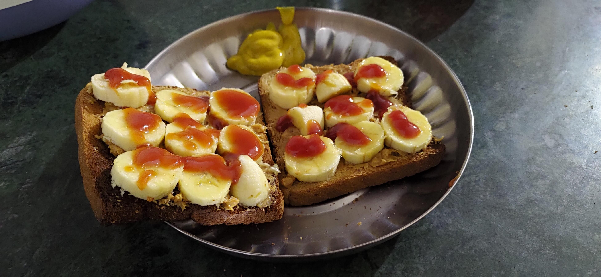

Catchup Banana Bread

Description
"Catchup Banana Bread" is an innovative and unexpected twist on the classic banana bread recipe, blending the
sweetness of ripe bananas with the tangy, umami-rich flavor of ketchup. This unique combination creates a moist,
flavorful loaf that's sure to intrigue and delight.
This wonderful receipt daring and delicious experiment for those looking to try something new in their baking adventures.
It's perfect for serving at brunches or as a conversation-starting dessert and pairs wonderfully with a spread of butter
or a dollop of cream cheese. This recipe is a testament to the culinary creativity, combining familiar ingredients
in an unexpected way to create a completely new taste experience.
Ingredients
- Ripe Bananas - 3 large, mashed
- Ketchup - 1/4 cup
- All-Purpose Flour - 2 cups
- Baking Soda - 1 teaspoon
- Salt - 1/2 teaspoon
- Ground Cinnamon - 1 teaspoon
- Ground Nutmeg - 1/4 teaspoon
- Brown Sugar - 1/2 cup, packed
- Granulated White Sugar - 1/2 cup
- Large Eggs - 2
- Neutral Oil (such as canola or vegetable) - 1/2 cup
- Vanilla Extract - 1 teaspoon
Steps
- Preheat your oven to 350°F (175°C).
- Grease a 9x5 inch loaf pan or line it with parchment paper.
- Peel and mash the ripe bananas in a large bowl until smooth.
- To the mashed bananas, add the ketchup, brown sugar, white sugar, eggs, oil, and vanilla extract.
- Mix these ingredients together until well combined.
- In a separate bowl, whisk together the flour, baking soda, salt, cinnamon, and nutmeg.
- Gradually add the dry ingredients to the wet mixture, stirring just until combined. Be careful not to overmix.
- If using, fold in chopped nuts or chocolate chips.
- Pour the batter into the prepared loaf pan and smooth the top with a spatula.
- Bake in the preheated oven for 60-65 minutes, or until a toothpick inserted into the center of the bread comes out clean.
- Once baked, remove the bread from the oven and let it cool in the pan for about 10 minutes.
- After 10 minutes, remove the bread from the pan and let it cool completely on a wire rack.
- Slice the bread once it's completely cooled.
- Serve as is, or with butter, cream cheese, or your preferred spread.
Wanna get back to check another recipes?
Click here!